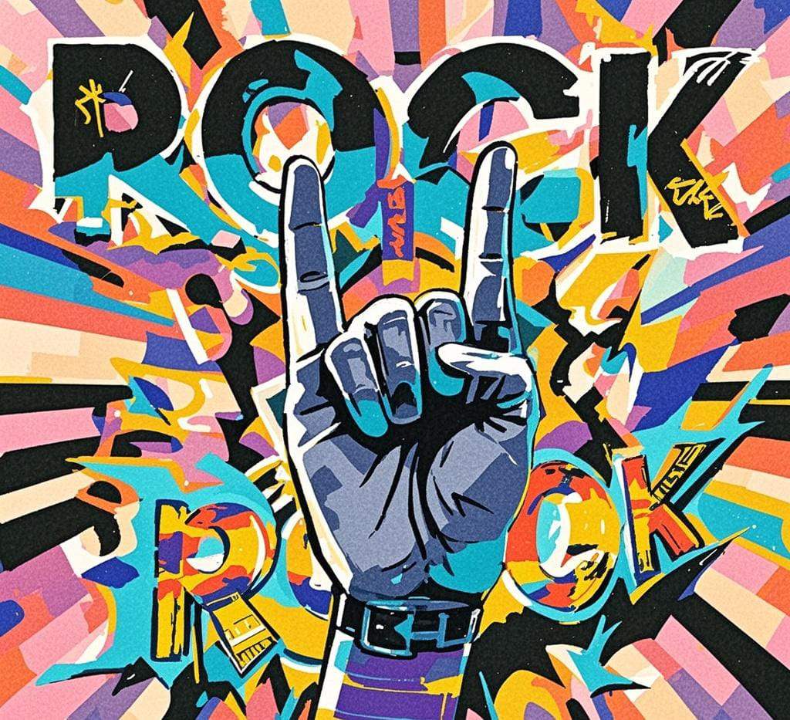
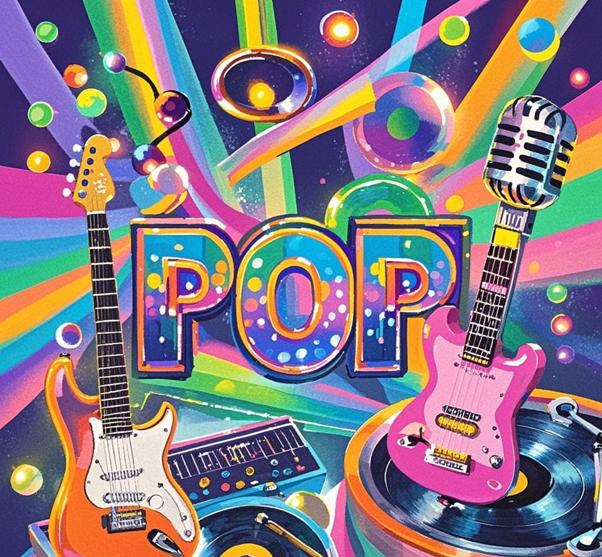

Bem-vindo ao Blog de Música da UVV
Descubra as músicas mais ouvidas pelos alunos da UVV em 2024! Aqui você encontrará listas incríveis de três gêneros musicais populares: Rock, Pop e Sertanejo.
Destaques por Gênero
Top 3 Músicas de Rock
Top 3 Músicas de Pop
Top 3 Músicas de Sertanejo